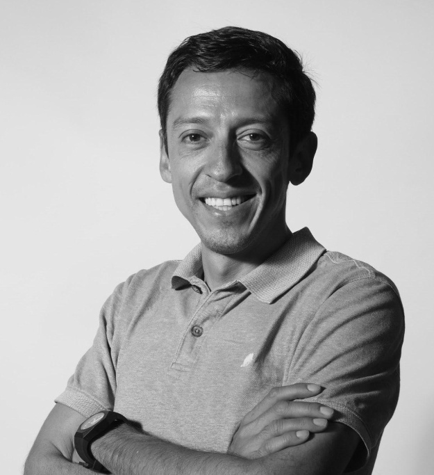

GENTRIFICACIÓN, DENSIDAD POBLACIONAL Y URBANA

David Fernando Rosales Bolaños es arquitecto guatemalteco especializado en gestión urbana, ordenamiento territorial, planificación urbana y desarrollo de proyectos de arquitectura y urbanismo.
Es Licenciado en Arquitectura por la Universidad de San Carlos de Guatemala, con una Maestría en Desarrollo Urbano y Territorio y estudios de posgrado en Ordenación del Territorio para Áreas Periféricas y Gestión Integral del Espacio Público.
Cuenta con una amplia trayectoria profesional vinculada a la planificación y transformación de ciudades, participando en proyectos de escala urbana y territorial en Guatemala y otros países de Centroamérica.
Facultad de Arquitectura, Diseño y Urbanismo — Universidad de Buenos Aires, Argentina, 2024.
Facultad de Arquitectura — Universidad de San Carlos de Guatemala, 2012.
INAP / Universidad de Alcalá de Henares, Madrid, España, 2008.
Universidad de San Carlos de Guatemala, 2004. Colegiado No. 1864.
Ha desarrollado una extensa trayectoria como consultor en gestión urbana y ordenamiento territorial, participando en procesos de planificación y desarrollo urbano para instituciones públicas y organizaciones nacionales e internacionales.
Entre sus experiencias destacan su participación en la Municipalidad de Guatemala, donde ha trabajado en procesos de ordenamiento territorial, planificación urbana, movilidad y gestión de proyectos; así como consultorías desarrolladas en Costa Rica, El Salvador y Honduras.
Fue además primer Coordinador Técnico de la Junta Directiva de Ordenamiento Territorial de la Municipalidad de Guatemala, participando en la ejecución y coordinación de diferentes instrumentos de planificación territorial, incluyendo Planes Locales de Ordenamiento Territorial y el Plan Maestro Ciudad Aurora.
Su experiencia comprende proyectos relacionados con la movilidad urbana, infraestructura ciclista, espacio público y urbanismo táctico.
Entre los proyectos en los que participó se encuentran la gestión, diseño y ejecución de las ciclovías de Avenida Las Américas y Avenida Reforma, estudios asociados a corredores de Transmetro y diversos proyectos de mejoramiento peatonal y espacio público.
También ha coordinado proyectos y actividades de urbanismo táctico y apropiación del espacio público, incluyendo intervenciones culturales, actividades comunitarias, festivales, hackatones y proyectos dirigidos a la participación ciudadana.
Como fundador y director de PUCHICA Urbanismo-Arquitectura, ha participado en proyectos de planificación, diseño y desarrollo urbano, incluyendo Master Plans, estrategias urbanas, proyectos residenciales, comerciales, industriales y de uso mixto.
Entre los proyectos y consultorías registrados en su trayectoria se encuentran trabajos de:
Cuenta con una amplia experiencia en el ámbito académico y universitario.
Ha sido catedrático en la Universidad de San Carlos de Guatemala, la Universidad Rafael Landívar y ha participado como catedrático invitado en la Universidad de Navarra, España.
Su experiencia docente incluye asignaturas relacionadas con diseño arquitectónico, conceptos urbanos, estructuras urbanas, planificación urbana, legislación territorial y urbanismo.
Desde 2005 ha participado además como conferencista invitado en encuentros y congresos nacionales e internacionales relacionados con temas urbanos y de sostenibilidad ambiental.
Su trayectoria profesional y académica incluye participación en proyectos y procesos de planificación urbana en diferentes países de Centroamérica, incluyendo:
Guatemala · Costa Rica · El Salvador · Honduras
Además, ha desarrollado estudios y participado en programas de formación internacional en países como España, Argentina, Brasil, Colombia, México y Estados Unidos, relacionados con planificación territorial, espacio público, sostenibilidad urbana, gestión del suelo y ciudades inteligentes.
Entre los principales reconocimientos y proyectos destacados de su trayectoria se encuentran:
Coordinación del proyecto de eficiencia energética municipal para barrios residenciales, reconocido con el premio a la iniciativa innovadora en 2012.
Coordinación del equipo de diseño y supervisión del proyecto ganador del primer lugar en la categoría de espacio público, relacionado con la renovación urbana de la zona 4.
Mención Honorífica como uno de los 10 mejores semifinalistas entre 176 participantes, con la propuesta Nuevo Curundú, representando a la USAC.
También ha coordinado equipos reconocidos en concursos de propuestas urbanas y ha recibido menciones honoríficas por trabajos académicos y proyectos de arquitectura.
Es miembro fundador de la Asociación de Planificadores Urbano Territoriales “Creamos Guate”, organización de la que fue presidente en distintos períodos.
También es colegiado activo del Colegio de Arquitectos de Guatemala, con número de colegiado 1864, y miembro fundador del colectivo Todos para Uno.